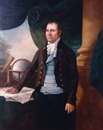
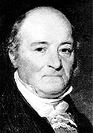

Simeon De Witt
Simeon De Witt was born in 1756, one of the fourteen children of Dr. Andries De Witt and Jannetje Vernooy of Ulster County. A native of Wawarsing, he grew up in the mid-Hudson backcountry. This physician's son was sent to Queens (Rutgers) College in New Brunswick, New Jersey where he was its only graduate in 1776.
As his father and kinsmen were prominent supporters of the Revolutionary cause, with the outbreak of war Simeon De Witt joined a company of students who were dispersed when the British captured New Brunswick. De Witt fled to New York City and then joined the Revolutionary army. Trained as a surveyor by his uncle, James Clinton, in June 1778 he was appointed assistant geographer to the army under Colonel Robert Erskine. In that capacity he helped craft a large body of seminal maps that now are in the collection of the New-York Historical Society. Following the death of Erskine, he was named "Geographer and Surveyor of the Army" in December 1780.
After the war, he was appointed "Surveyor General of New York State" and settled in Albany. His office in the new state building on upper State Street was the center of intense activity during the postwar period - as the new "Empire State" was being mapped out. He held that office until his death in 1834. Over a long career, his experience often was solicited by New York and interstate commissions charged with developing the New York landscape and settling disputes.
Simeon De Witt's residence along Court Street was listed on the census of 1790. A few years later, he built a landmark house on the site of old Fort Orange. De Witt lived at that riverside location (finally called 549 South Market Street) thru the 1820s.
In 1789, he married Elizabeth Lynott, the daughter of an Irish trader turned farmer. After bearing two children, Elizabeth died in 1793. A few years later, De Witt married the widow Jane Varick Hardenberg - a niece of the mayor of New York City. Their son, Richard Varick De Witt, became a distinguished civil engineer. Jane V. H. De Witt died in 1808. Simeon De Witt later married for a third time to Susan Linn. He was a member and pewholder of the Albany Dutch Reformed Church. During the early 1800s, he was one of a number of Albany residents to manumit their slaves. By 1810, four former slaves were free members of his household.
As Surveyor General, Simeon De Witt's name was intertwined with the development of central and western New York. His office surveyed, approved, and filed literally hundreds of land documents. Not surprisingly, he owned substantial acreage in the Finger Lakes region. His obituary called him one of the founders of Ithaca.
Headquartered in Albany, this state official was an advocate of economic and cultural betterment. In 1791, he was among the founders of the "Society for the Promotion of Agriculture, Arts, and Manufactures." Later, he was vice-president and then, from 1813 to 1823, president of the organization that later became the Albany Institute of History and Art . He served on the New York State Board of Regents and was named chanceller of the University of the State of New York in 1829. Among many others, he also was a member of the American Philosophical Society.
During the 1790s, De Witt had purchased lands at the southern end of Cayuga Lake. He is credited for applying a Latin name to the settlement that became Ithaca. After 1828, he retired to his East Hill estate. Simeon De Witt died in Ithaca December 1834 at the age of seventy-nine. He was buried on his property there but his remains later were removed to the Albany Rural Cemetery.
De Witt's outstanding contribution to the history of Albany stems from his survey work on behalf of the city. His often-reproduced base map of the city in 1790 was utilized for many years. Subsequent versions featured a projected street grid that patterned development of Albany beyond its ancient core for the next two centuries.

This portrait of Simeon De Witt by Ezra Ames was painted about 1804 and is in the collection of Rutgers University.
Succumbing to a fatal fever, Robert Erskine died on October 2, 1780 at the age of 45. For more insight on this son of a Scottish minister and on the work of his department, see Albert H. Heusser, The Forgotten General: Robert Erskine, F. R. S. (1735-1780) (Patterson, NJ, 1928). De Witt was credited with crafting his mentor's coffin plate. See also, David Y. Allen's online exposition on De Witt's cartography.
The development of De Witt's residence on the Fort Orange site follows Paul R. Huey's Aspects of Continuity and Change in Colonial Dutch Material Culture at Fort Orange, 1624-1664 (Ph.D. dissertation, University of Pennsylvania, 1988), part I, pp. 132-143. Huey's remarkable discussion addresses the subsequent use of the property.
This portrait of De Witt was painted about 1830 and is attributed to Henry Inman and is in the collection of the Albany Institute of History and Art.